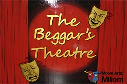

Millom and Haverigg Tourist Information
Millom |
 Close to the Duddon Estuary and the imposing fell of Black Combe is the medium sized town of Millom.
Close to the Duddon Estuary and the imposing fell of Black Combe is the medium sized town of Millom.
Until the discovery of iron-ore at Hodbarrow on the towns outskirts in 1855, Millom was a collection of small fishing villages and scattered farms. The iron-ore mining together with steel making transformed this once undisturbed area to one of a large prosperous community of some 10,000 inhabitants which thrived until closures began in the late 1950’s and early 60’s.
A vivid reminder of those days stands in the market place in the form of a sculpture “the scutcher” whose back breaking job it was to halt the heavily laden tubs of iron-ore by thrusting an iron bar through the wheels.
 The Millom Folk Museum comprehensively records the rise and fall of the iron-ore and steel making industries. The museum was opened by Millom born poet Norman Nicholson in 1974. He was a poet not in the mould of William Wordsworth, but one who wrote of the everyday life of the towns people; their joys and their hardships. The sight of unemployed men struggling to support their families following the closure of the iron-ore mines and steel making affected him deeply.
The Millom Folk Museum comprehensively records the rise and fall of the iron-ore and steel making industries. The museum was opened by Millom born poet Norman Nicholson in 1974. He was a poet not in the mould of William Wordsworth, but one who wrote of the everyday life of the towns people; their joys and their hardships. The sight of unemployed men struggling to support their families following the closure of the iron-ore mines and steel making affected him deeply.
 The Church of St. George's has a stained-glass window designed by Christine Boyce who was inspired by Norman Nicholson's poetry, plays, novels and short stories as were many others.
The Church of St. George's has a stained-glass window designed by Christine Boyce who was inspired by Norman Nicholson's poetry, plays, novels and short stories as were many others.
The library in the market square has a room devoted to his works. He died in 1987 aged 73 years.
Nowadays you can walk the path to Hodbarrow and its abandoned workings and memories and look out to sea from what is now a RSPB Nature Reserve, home to rare plants and the even rarer Natterjack Toad.
Millom Castle stands on the entrance to the town approached along the A5083 from Broughton-in-Furness. Little remains of the castle which is not open to the public. It backs onto the 12th C Grade 1 listed Holy Trinity Church. The late Norman structure is built from red sandstone and inside are several interesting stained-glass windows including one of “The Last Supper”. The churchyard contains a fine looking sundial which possibly has some connection with the late Sir John Huddleston who was granted a Charter in 1251 by Henry 11 to hold a market every Wednesday .A booklet is available in the church detailing the history.

Millom is a town which wears its past on its sleeve, not glamorous but rich in down to earth hospitality and warmth.
Accommodation is sensibly priced value for money especially suitable for those looking for a base which provides quick and easy access to the tracks and trails of the Furness Peninsula and the beauty of the Duddon Valley and Estuary. The safe clean beaches of Haverigg and Silecroft are but a short drive,( or even walk) away, and a few miles beyond is the famous Ravenglass to Boot passenger carrying miniature steam railway plus the grandeur of Scafell,Englands highest mountain, and Wastwater, Englands deepest lake.
For more Millom information, please visit: www.millom.org.uk
Haverigg |
 Haverigg is only a couple of miles up the coast from Millom. It's a small coastal resort in a lovely setting with the sea on one side, and on the other, the easily accessible fell of Black Combe standing at around 1000 feet, or 300 metres. Haverigg has a safe beach where children can play in comfort; is ideal for kite flying; walking the dog; horse riding, or just relaxing.
Haverigg is only a couple of miles up the coast from Millom. It's a small coastal resort in a lovely setting with the sea on one side, and on the other, the easily accessible fell of Black Combe standing at around 1000 feet, or 300 metres. Haverigg has a safe beach where children can play in comfort; is ideal for kite flying; walking the dog; horse riding, or just relaxing.
A small beach café offers sandwiches, warm meals, non-alcoholic drinks, ice-creams and is located next to a children's adventure playground. The holiday caravan park is a few minutes away.
 A striking sculpture by the Brazilian artist Josephina de Vasconcellos always attracts a good deal of interest from its position near the dunes facing the sea. It is dedicated to the inshore rescue teams.
A striking sculpture by the Brazilian artist Josephina de Vasconcellos always attracts a good deal of interest from its position near the dunes facing the sea. It is dedicated to the inshore rescue teams.
Close by is the disused wartime airfield of Kirksanton, the birthplace of the Royal Air Force Mountain Rescue.
The only revolving propellers these days are the gently turning 25 metre blades of several 45 metre tall wind generators. They produce sufficient electricity for over 1000 homes. Some people consider them to be an eyesore, but to me, there is a certain majesty in their form and presence.
 Haverigg is one of the quieter locations in the Lake District well suited to bird-watchers, cyclists and walkers. Incidentally, the walk along a level path from Millom to Haverigg passing through the RSPB. Nature Reserve is well recommended especially on a warm autumn day when there may be a few ripe blackberries left to pick.
Haverigg is one of the quieter locations in the Lake District well suited to bird-watchers, cyclists and walkers. Incidentally, the walk along a level path from Millom to Haverigg passing through the RSPB. Nature Reserve is well recommended especially on a warm autumn day when there may be a few ripe blackberries left to pick.
Accommodation in the area is plentiful ranging from budget prices to the more up-market. The comfortable eating places offer appetizing menus and try not to miss the mid-day or evening pint of the local brew in the convivial surroundings of the welcoming pubs. The West Coast attractions, the lakes and mountains are easily reached from this relaxing laid-back resort. You can be assured of a warm friendly welcome in Haverigg.
For more Haverigg information, please visit: www.haverigg.net
How to get there:
By rail: From the West Coast Main Line, change at Carnforth or Preston for Millom.
By road: Leave the M6 at J36 and follow signs for Barrow on the A590. On reaching Greenodd, take the A5092 to Broughton-in-Furness and then the A595 to Millom.
Attractions in Millom and Haverigg |
The Beggar’s Theatre lies in the heart of the community of Millom, Cumbria. The theatre is a modern and versatile space and also the home of Moore Arts: Millom, a company dedicated to developing and promoting young talent within the community through the Arts. |
 |
Hodbarrow Nature Reserve
This is a small RSPB Nature Reserve on the site of the Hodbarrow Mine which ceased production in the late 1960’s. It is part of the Duddon Estuary Site of Special Scientific Interest. About 50 percent of the countrys population of Natterjack Toads is found in Cumbria and Hodbarrow plays host to many of these nocturnal creatures. Here you will find pleasant walks in flower rich grasslands of marsh orchids, bee orchids, rare flora and fauna, butterflies, skylarks, the peregrine falcon, terns and occasionally the sight of dancing crested grebes. Level walks with some push chair and wheelchair access.
Millom Ironworks Local Nature Reserve
A good deal of hard work has been carried out to devise this recreation area. Like the nearby Hodbarrow it is an important habitat for species of tern, wading birds and waterfowl. Good views of the Lake District Fells and the Duddon Estuary and easy access.
Cumbrian Heavy Horses
A unique method of exploring the beautiful countryside astride gentle well trained Clydesdale, Shires and Ardennes horses. Rides tailored to your experience and ability will take you across farmland, along beaches or in to the mountains and fells of the stunning Lake District scenery. Remember to wear suitable clothing and shoes or boots with a well defined heel. Hats are available on request.
Phone: 01229 777764 or 07769 588565
www.cumbrianheavyhorses.com
Email annie@cumbrianheavyhorses.com
Haverigg beach
A child safe area with dunes, children’s play area and a small café and shop. A good location to fly your kite.
Sea and fresh water fishing
Day and weekly permits available from Millom Tourist Information Centre at the railway station.
Contact Mr B Crawford Phone: 01229 777648
Millom Folk Museum
An interesting insight in to the rise and fall of the iron mining and steel making industries plus an area devoted to the towns writer and poet, the late Norman Nicholson. Combine this with a visit to the statue of the “Scutcher” in the Market Square. Open Good Friday – 31October, Tuesday – Sunday, 10.30 am– 4.30pm
Millom Castle
The castle saw action during the English Civil War. Little remains of it except the crumbling outer walls. Not open to the public.
Millom Recreation Centre
Welcome to Millom Recreation Centre which is situated next to Somerfields Supermarket on Lancashire Road. The building consists of a main hall and small gymnasium together with a meeting room, disabled toilets and reception area on the ground floor. Changing rooms, toilets and a sun bed room is on the first floor.
The sports hall is the main feature of the building and provides sufficient space for 4 badminton courts. The hall has dividing curtains which allows the floor space to be divided and so give space for more than one activity at the same time.
Facilities include badminton, short tennis, cricket, carpet bowls, table-tennis, football, netball and basketball. Children's activities are also provided at certain holiday time. Opening times are as follows; Monday to Friday. 9am-12noon; 1.30pm-3.30; 5pm-10pm. Times may vary during Bank Holidays and Saturday and Sunday bookings are taken according to demand.
For prices and availability, call 01229 774985 or visit the Reception.
Holy Trinity Church (stands next to the castle)
It is a late Norman 12th C building constructed of red sandstone. The churchyard contains several listed monuments one of which is a fine old sundial near the south wall of the church.
Saint Georges Church
Built in 1847 and includes the Norman Nicholson Memorial Window designed by Christine Boyce.
The Duddon Estuary
Of this feature, Norman Nicholson wrote, “This is the work that God laid down on the third day”. The broad expanse of sands and mud flats is second only to the Solway Estuary in size. Designated a Special Protection Area it is home to important populations of breeding birds and a favourite with those dedicated to the preservation and well-being of our wildlife and their habitat. Access from both Millom and Haverigg is straightforward.
Walking
Black Combe, overlooking Haverigg and Millom is a favorite not too demanding climb. From the summit you will be rewarded with a glorious panorama on a clear day. The Furness Fells are a magnet for many and a good place to begin is from Seathwaite in the Duddon Valley. A short walk will bring you to Seathwaite Tarn, the third largest tarn in the Lake District, and beyond lays Coniston, Coniston Old Man, the Hardknott and Wrynose Passes and Tarn Howes, one of the most photographed waters in the Lake District and Cumbria.
The La’al Ratty Railway
Children and adults love this journey on the famous narrow gauge railway which begins the glorious Eskdale Valley ride from Ravenglass to Boot. Ravenglass is around a half hours drive and on your way there or back why not call at Silecroft for a bracing walk along this safe clean beach? Good chance to fly a kite too.
Hodbarrow Lighthouse
It was built to protect Hodbarrow Mines from flooding. After restoration in 2003 it is now powered by solar energy. The children of Haverigg Primary School have adopted it as an opportunity to explore and discover their heritage and to represent a vision of future enlightenment.
Haverigg Sand Rats
Our local newly formed bike club. An annual rally is held at the Rugby Union Club, also lots of trips and visits from other clubs during the summer months.
Find up to date info on www.haverigg.net
Food and Drink in Millom and Haverigg |
The Rising Sun Pub, 38 Main Street. Haverigg
A friendly Real Ale pub open 7 days a week a few minutes walk from the beach. Sky Sports: B.T. Sports: Beer Garden: Children welcome: Dogs welcome: Good selection of real ales, wines, spirits and soft drinks. Member of CAMRA.
The Beach Café, Haverigg
Conveniently sited close to the shore, children's playground and car park. Good selection of light meals, snacks, soft drinks, and an excellent English Breakfast. Open 7 days a week from 10 am.-5pm. and 10am.-7pm. during the school summer holidays.
Phone:
01229 771097
Chippy Café
Main Street Haverigg. The best in fish and chips. Open Tuesday, Wednesday, Thursday and Saturday from 11.45am-1.30pm and 4.30pm-7.30pm. Fridays from 11.45am-1.30pm and 4.30pm-8pm. Phone 01229 772734
Small Fry Fish and Chips
90, Holborn Hill ,Millom.
Phone: 01229 771321
Transportation in Millom and Haverigg |
Steves Private Hire
A reliable service offering journeys in comfort and safety. Long and short distance. Try our Courier Service.
Phone: +44 (0)1229 771135 or 777080